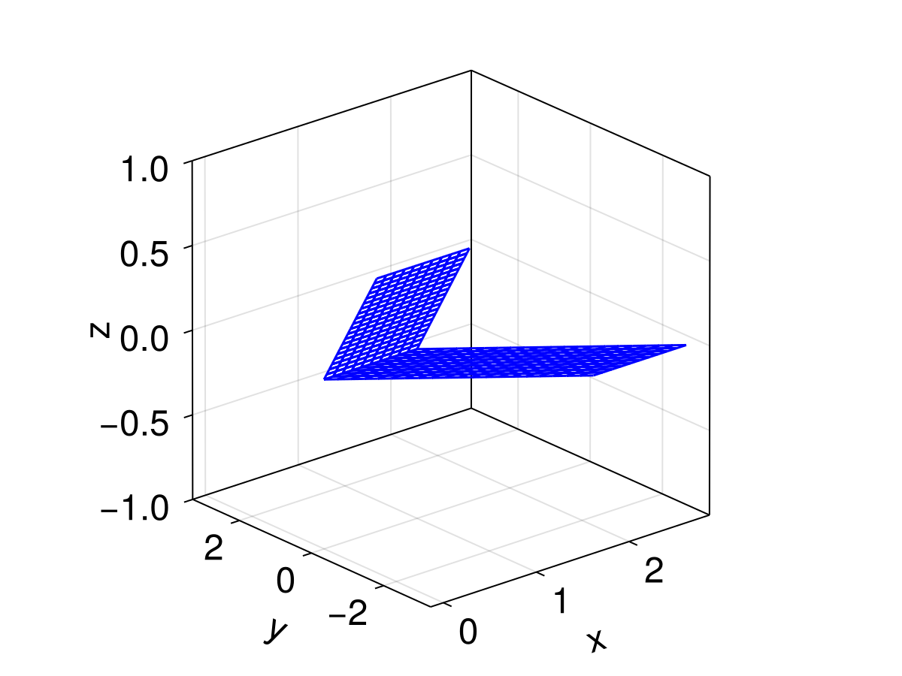
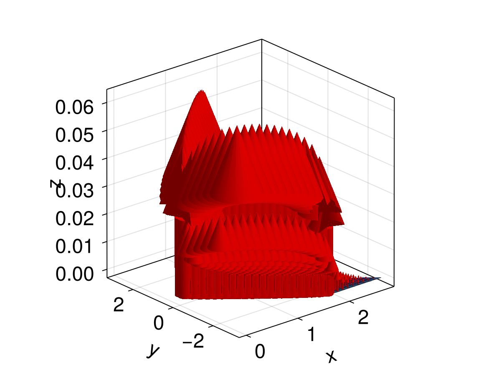

Steady-State Analysis
This example demonstrates how to solve for the steady lift and drag of a wing using the Vortex Lattice Method implemented in AeroPanels.jl.
using AeroPanels
using StaticArrays
using GLMakie1. Define Geometry
We start by defining a simple rectangular wing with 10 chordwise and 20 spanwise panels.
nc, ns = 10, 20
chord = (1.0, 1.0)
span = 3.0
surf = AeroSurface2D(nc, ns, chord=chord, span=span, sweep=deg2rad(30.0));
surf2 = Mirror(surf, 2) # Mirror along Y-axis for a full wingAeroSurface2D{Float64}:
(nc=10, ns=20)2. Set Model Properties
We define the reference dimensions (chord, span, area) for coefficient calculation.
props = AeroModelProperties(c=1.0, b=span, S=span*2.0);3. Create Model
The AeroModel2D constructor assembles the influence matrices and prepares the solver.
model = AeroModel2D([surf, surf2], props);4. Solve
We define a flight condition (Speed and Angle of Attack) and solve for the aerodynamic forces.
V, α = 10.0, 5.0 # Speed [m/s], AoA [deg]
sol = AeroSolve(V, α, model)SteadySolution{Float64}(CD=0.0063, CY=0.0, CL=0.3399)5. Results
The solver returns a SteadySolution object containing the force coefficients.
println("Lift Coefficient (CL): ", round(sol.CL, digits=4))
println("Drag Coefficient (CD): ", round(sol.CD, digits=4))Lift Coefficient (CL): 0.3399
Drag Coefficient (CD): 0.0063
Visual Representation
PlotModel(model)
Plot Forces
vb = AeroPanels.BodyVelocity(V, deg2rad(α))
b = AeroPanels.NormalWash(vb, model)
Γp, Γw, Γs = AeroPanels.Circulation(b, model)
PlotModel(model, plotWake=false, Γp=Γp, Γw=Γw, plotForces=true, sol=sol, forceScale=0.05)
This page was generated using Literate.jl.